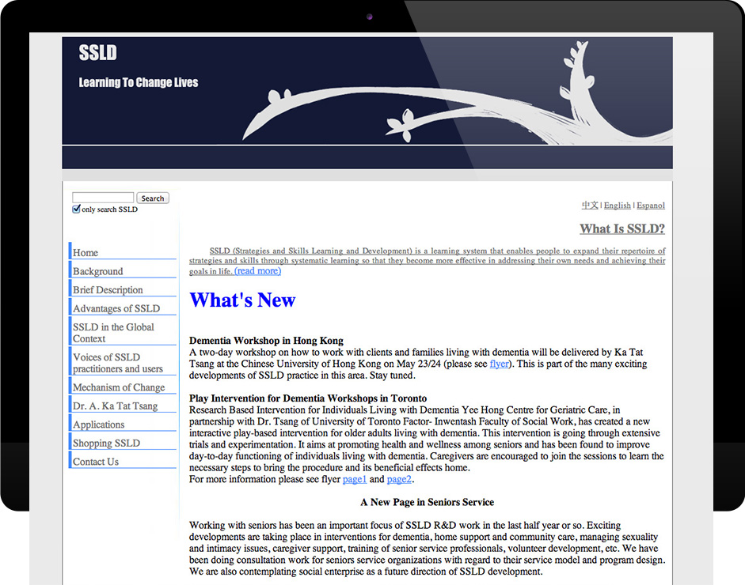
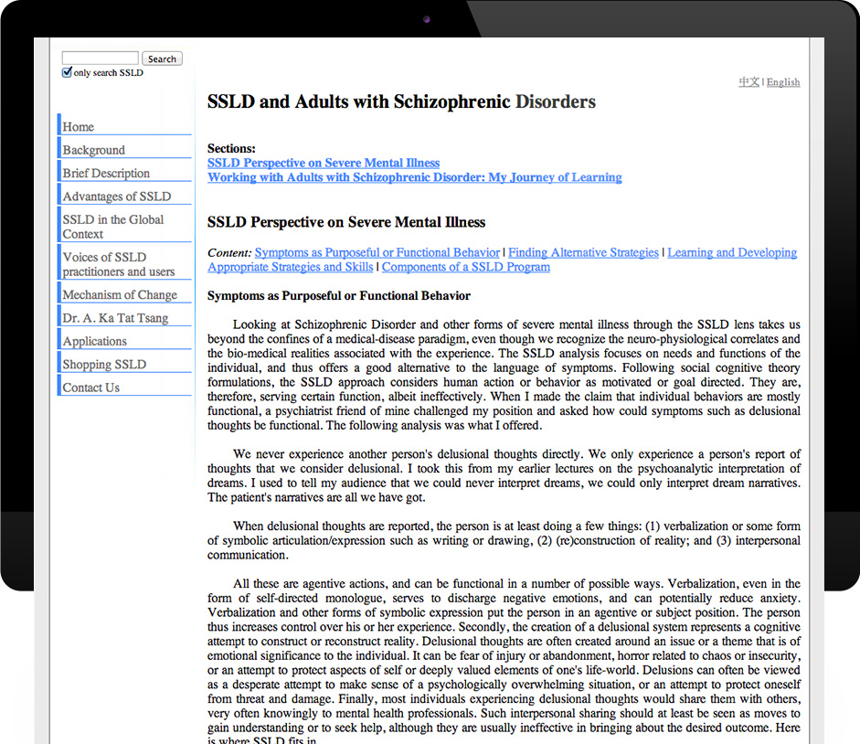
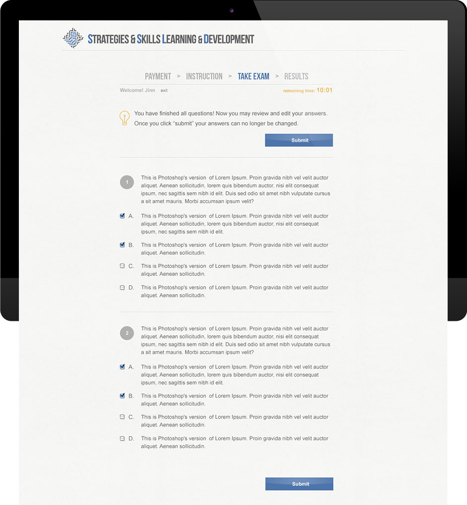

SSLD website is a redesign project for the Skills and Strategies Learning and Development System, a multi-functional social service system developed at the social work faculty of University of Toronto. The whole site adopted an institutional/professional style that goes in line with the web presence of UofT. I was responsible for both design and front-end development of the website.

The new site reinvented the info-structure.
- Informaton on the index page was streamlined so it does not overcrowd readers.
- A quick access link to "What's SSLD" was added & placed in a prominent position. It ensures most direct access to information saught by new potential users of the system.
- News updates use to be the chunk of the index page. The new design re-arranged selected updates in the carousal window to retain the information while saving space.
- Application areas are main "selling points" for a service system. Therefore, major applications were specifically named on the front page to draw interest of viewers.
The complete news updates are shown in a separate "happenings" page. Most of the updates will be short passages, therefore I decided a timeline format is the best fit.
The website's articles are mostly longer, structured in academic style. The new design broke down long articles based on its section titles. Section contents are hidden until expanded. In other words, target audience may follow they academic reading habits: overviewing the article sections before diving in for information they need.
The new site hosts a newly developed certification exam system. A set of guided exam pages were designed. After logging into the exam system, all irrelevant information (eg. navigation, language options) in the header will disappear to allow maximum focus on the exam.